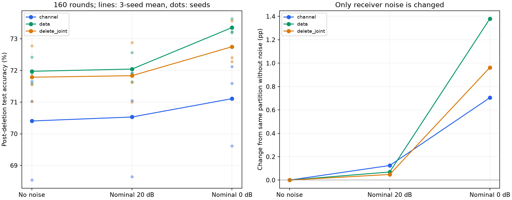

가설 채널 중심 배정의 정확도 손실은 수신 잡음 때문에 발생했는가?
독립변수 noise variance 0 / .01 / 1 · 종속변수 삭제160round 정확도 및 동일배정의잡음효과 · 통제 배정·데이터·초기화·batch·채널·round·전력한도·전송량 · 상태 신규18조건360삭제 완료, 기존9조건180삭제 재사용
무선 잡음을 제거해도 채널 중심 배정의 열세가 남는다는 사전 기준을 충족했습니다. 무잡음에서 channel−data 차이는 -1.57%p입니다. 이것은 수신 잡음으로 설명되지 않는 배정/크기/협업학습 효과이며, 데이터 편중 하나의 인과효과로 단정하지 않습니다.
기존결과가불리하다는이유로배정·seed·목표값을바꾸지않았습니다. 강한잡음조건도0dB라는스트레스시험으로명시하고무잡음·20dB와동시에보고합니다. 채널집계MSE개선과실제정확도개선을구분합니다.

| 배정 | 수신 잡음 | 최초 test | 삭제160 test | 최저 class recall 평균 | 무잡음 대비 변화 | 삭제 집계MSE |
|---|---|---|---|---|---|---|
| channel | no_noise | 70.45% | 70.40% | 17.51% | +0.00%p | 0 |
| channel | nominal20dB | 70.56% | 70.53% | 17.32% | +0.12%p | 0.01049 |
| channel | nominal0dB | 71.18% | 71.11% | 15.37% | +0.70%p | 1.049 |
| data | no_noise | 72.15% | 71.97% | 13.80% | +0.00%p | 0 |
| data | nominal20dB | 72.13% | 72.04% | 13.73% | +0.07%p | 0.02779 |
| data | nominal0dB | 73.47% | 73.35% | 17.15% | +1.38%p | 2.779 |
| delete_joint | no_noise | 72.05% | 71.79% | 13.26% | +0.00%p | 0 |
| delete_joint | nominal20dB | 72.13% | 71.83% | 12.98% | +0.05%p | 0.01657 |
| delete_joint | nominal0dB | 73.00% | 72.75% | 14.12% | +0.96%p | 1.657 |
| 잡음 조건 | 채널−데이터 정확도 | 무잡음 대비 격차 변화 | seed별 채널−데이터 |
|---|---|---|---|
| no_noise | -1.57%p | +0.00%p | -0.89, -0.77, -3.05 |
| nominal20dB | -1.51%p | +0.06%p | -0.88, -0.67, -2.99 |
| nominal0dB | -2.24%p | -0.68%p | -2.04, -1.08, -3.62 |
격차 변화 = [채널(noise)−채널(무잡음)] − [데이터(noise)−데이터(무잡음)]. 양수면 채널 중심 배정이 상대적으로 잡음에 강한 방향입니다. 이는 그 조건에서 channel이 최종 정확도도 가장 높다는 뜻은 아닙니다. 3개 seed의 같은 그룹·같은client 삭제를 짝지어 비교했습니다.
| 구분 | 통제 |
|---|---|
| 배정 | 기존 channel/data/delete_joint 그룹 그대로. shard크기·client소속 재검색 없음 |
| 데이터 | FashionMNIST12000/2000/10000, Dirichlet.5, 20clients, seeds62001~62003 |
| 모델 | CNN38282 parameters, 모든조건동일초기값 |
| 학습 | 2SGDsteps×64, lr.05, momentum0, clip1, source/삭제모두160round |
| 무선 | SISO순차4blocks, R=1, P=1평균symbol전력한도, 동일h/CSI/동기화 |
| 유일한 개입 | receiver sigma²=0/.01/1. 동일standard-normal noise에크기만변경 |
| 삭제 | 모든20명을각각삭제, 해당shard만초기화재학습, 다른shard source모델유지 |
| 예산 | 같은배정과삭제자에서통신량·localcalls가noise조건간완전히같음 |
| 선택 | test/dev로조건선택·조기중단안함. 20dB기존자료재사용표시 |
같은배정 안에서 수신잡음의 효과는 분리했습니다. 배정방법 사이에는 원래부터 shard크기와 데이터구성이 다르므로 무잡음에서의차이를 ‘데이터편중만의효과’라고해석하지않습니다. 이것은 원인을 숨기지 않고 결론의 범위를 정확히 나누기 위한 대조입니다.
원자료 indices/pools/base채널 일치, 기존코드와20dB 1step 재현9건 parameter오차0. 삭제 57,600events 물리식/전력/R1 검산. 360개삭제의통신·연산이이전같은배정160round와일치. representative client0 초기화재실행18건 최대parameter오차 0. 공개고정routing조건부모델검증이며privacy/metadata삭제/실제RF검증아님.
| seed | 배정 | 잡음 | source test | 삭제 test | 신규실행 |
|---|---|---|---|---|---|
| 62001 | channel | no_noise | 71.00% | 71.02% | True |
| 62001 | channel | nominal20dB | 71.02% | 71.04% | False |
| 62001 | channel | nominal0dB | 71.61% | 71.59% | True |
| 62001 | data | no_noise | 72.04% | 71.91% | True |
| 62001 | data | nominal20dB | 71.78% | 71.92% | False |
| 62001 | data | nominal0dB | 73.70% | 73.63% | True |
| 62001 | delete_joint | no_noise | 71.72% | 71.55% | True |
| 62001 | delete_joint | nominal20dB | 71.86% | 71.62% | False |
| 62001 | delete_joint | nominal0dB | 72.61% | 72.40% | True |
| 62002 | channel | no_noise | 71.83% | 71.65% | True |
| 62002 | channel | nominal20dB | 72.13% | 71.90% | False |
| 62002 | channel | nominal0dB | 72.28% | 72.12% | True |
| 62002 | data | no_noise | 72.62% | 72.42% | True |
| 62002 | data | nominal20dB | 72.73% | 72.56% | False |
| 62002 | data | nominal0dB | 73.43% | 73.20% | True |
| 62002 | delete_joint | no_noise | 73.20% | 72.78% | True |
| 62002 | delete_joint | nominal20dB | 73.23% | 72.88% | False |
| 62002 | delete_joint | nominal0dB | 73.97% | 73.56% | True |
| 62003 | channel | no_noise | 68.51% | 68.54% | True |
| 62003 | channel | nominal20dB | 68.53% | 68.65% | False |
| 62003 | channel | nominal0dB | 69.65% | 69.61% | True |
| 62003 | data | no_noise | 71.79% | 71.59% | True |
| 62003 | data | nominal20dB | 71.87% | 71.64% | False |
| 62003 | data | nominal0dB | 73.29% | 73.23% | True |
| 62003 | delete_joint | no_noise | 71.24% | 71.02% | True |
| 62003 | delete_joint | nominal20dB | 71.31% | 71.00% | False |
| 62003 | delete_joint | nominal0dB | 72.43% | 72.28% | True |
첫2조건을완료한뒤호환검사에서잡음설정초기화누락으로중단했다. 완료조건의noise설정은정상이었으며해당결과를보존하고,검사직전sigma²=.01초기화를추가한뒤남은16조건만재개했다. 실험조건/성공기준/seed는변경하지않았다. 오류·복구 기록. 첫2조건의최종tensor묶음은소실됐지만원자료events/metrics는보존됐다.
첫실행완료구간 시간하한 2.40분 + 재개 18.09분 = 총실행시간하한 20.49분. 재개구간GPU보드 48.861Wh(호스트전체아님), 첫실행GPU샘플소실로총에너지는미측정. 재개 local training calls 290,288 + 기존엔진호환검사 48회. 외부결제0, 전기요금미산정. 재사용20dB실험의과거비용은이번비용에중복합산하지않음.
한데이터셋·3seed·작은CNN·합성채널·완전CSI에대한통제실험입니다. AirCluster MIMO비교/새배정최적화/새삭제확률모델은실행하지않았습니다. 조건통제가문제없음이나새알고리즘우위를보장하지않습니다. 수신잡음영향과배정전체영향을구분한결과를기반으로후속알고리즘을설계하며,이번결과를보고추가조건을골라실행하지않습니다.
사전등록 조건 · 분석 원자료 · 새 실행 결과 · 검산 · 기존실험 일치 확인 · GPU 비용 · 실행코드 · 입력/코드 SHA256 · 기존20dB 실험